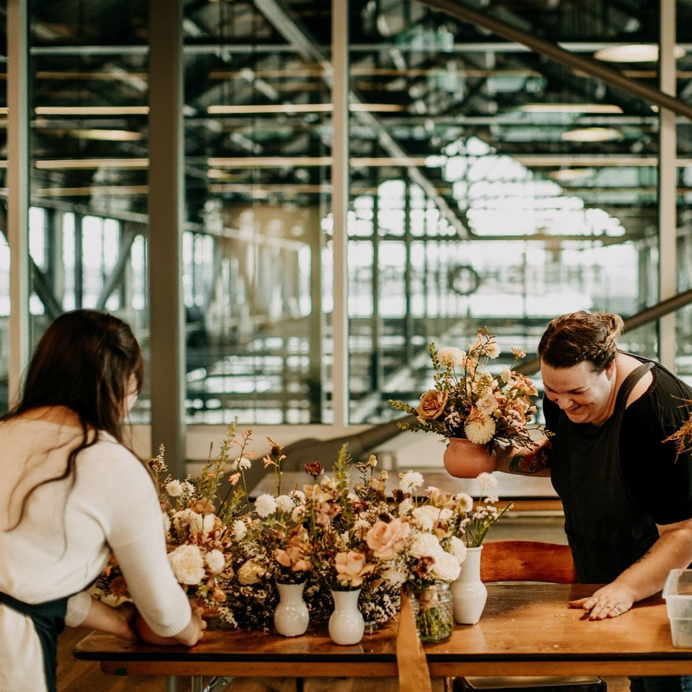

Urban Vases started as a small venture with a big dream – to make every home a work of art. Our story is a journey of dedication, creativity, and a commitment to design excellence. From our humble beginnings to becoming a recognized brand, every step reflects our passion for unique and modern vases.
Jennie - LEADER Jane Smith - CFO

Alice - Marketing Specialist